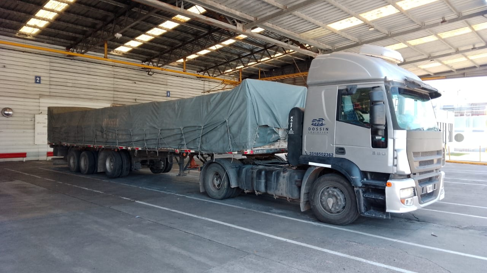
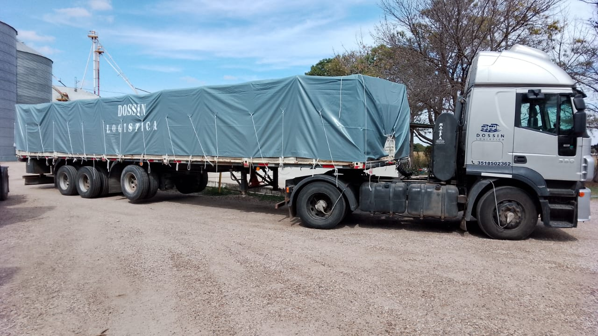

Nuestro Blog

7 razones por las que deberías tercerizar la logística de tu empresa
La expansión del comercio ha hecho que la logística se convierta en un factor estratégico para todas aquellas empresas que buscan crecer. A medida que
LEER MÁS

La logística y el transporte se adaptan al Coronavirus
Durante la situación que estamos atravesando del Coronavirus, muchas actividades pueden ser frenadas algunos meses. Pero tanto la salud como la logística, no pueden abandonar
LEER MÁSLa importancia de seleccionar el mejor medio de transporte de mercancías
Elegir el transporte adecuado es un elemento clave cuando se requiere importar o exportar mercancía. Cada producto tiene características y condiciones de entrega específicas, por
LEER MÁS